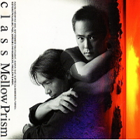

Mellow Prism
-
01. 夏の日の1993（Album ver.）
作詞：松本 一起 作曲：佐藤 健 編曲：十川 知司テレビ朝日系「君といつまでも」OPテーマ/CM「セゾンカード」
-
02. September True Love
作詞：class 作曲：小坂 きよし 編曲：松本 晃彦明治乳業「マグノリア」CMイメージソング
-
03. Rainy Day
作詞：松本 一起 作曲：北村 勝彦 編曲：十川 知司
-
04. 夏が恋したヴィーナス
作詞：class 作曲：北村 勝彦 編曲：松本 晃彦
-
05. 瞳に架かる虹
作詞：class 作曲：高田 昌青 編曲：松本 晃彦
-
06. セピア色の微笑
作詞：class 作曲：class 編曲：関根 安里
-
07. Mellow Prism
作詞：松本 一起 作曲：拓植 由秀 編曲：関根 安里
-
08. 夏の日の1993 reprise
作詞：松本 一起 作曲：佐藤 健 編曲：十川 知司